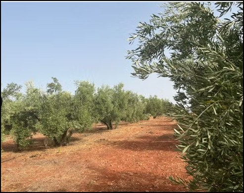
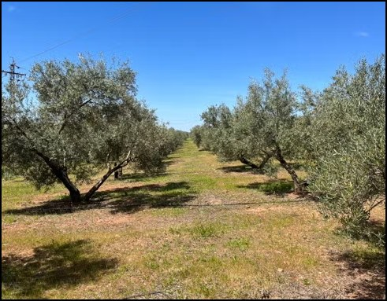
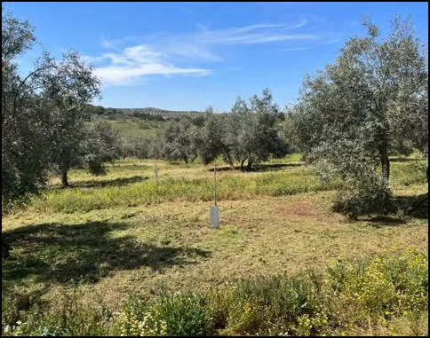
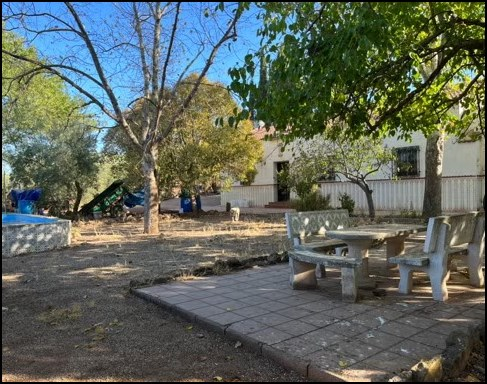
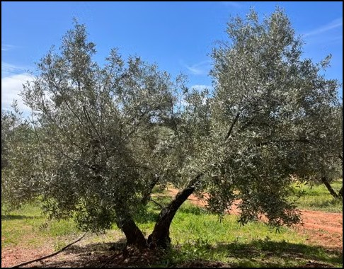

Fotografías de la finca






Descripción
Referencia: 441991842
Se vende finca de aproximadamente 1.900 olivos de regadío, muy fruteros, con subvención PAC y subvención de eco regímenes, con buen acceso por dos partes y situada entre Linares y Bailén.
Plantación: 1.350 olivos Picual grandes de 3 y 4 pies; 200 Arbequina de un pie de unos 25 años; 355 Picual de un pie de dos años.
Tiene instalado riego por goteo en pleno funcionamiento con dos sondeos legales, uno de 5 l/s y otro de 1 l/s, además de luz propia.
Dispone de una vivienda de una planta de 100 m², una nave de 50 m² y piscina con merendero. También cuenta con otra nave de aperos de unos 30 m².
La finca se presenta como una oportunidad de inversión, al estar actualmente arrendada y trabajada por personas que disponen de maquinaria y aperos y que, según la información facilitada, estarían dispuestas a seguir explotándola en caso de venta.